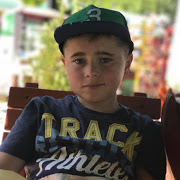

About Me
Who am i?

Bio
I am Elion Shkololli, i am an 12 year old kid with big dreams. I live in a country called Kosovo. I started learning english when i was 2 years old and since then, a lot has changed and now i can speak and read english perfectly. My interest in Technology started when i was 5 years old, I was in a lot of news stories back then and i started learning more about tech.
Web Developer
I am a front-end web developer, i am highly skilled in html and css & more!
Web Designer
I am a web designer/graphic designer. I use photoshop, figma and adobe xd as some of my tools.
Entrepreneuer
I am also an entreprenuer on youtube, on which i post videos about tech, web development, design etc.